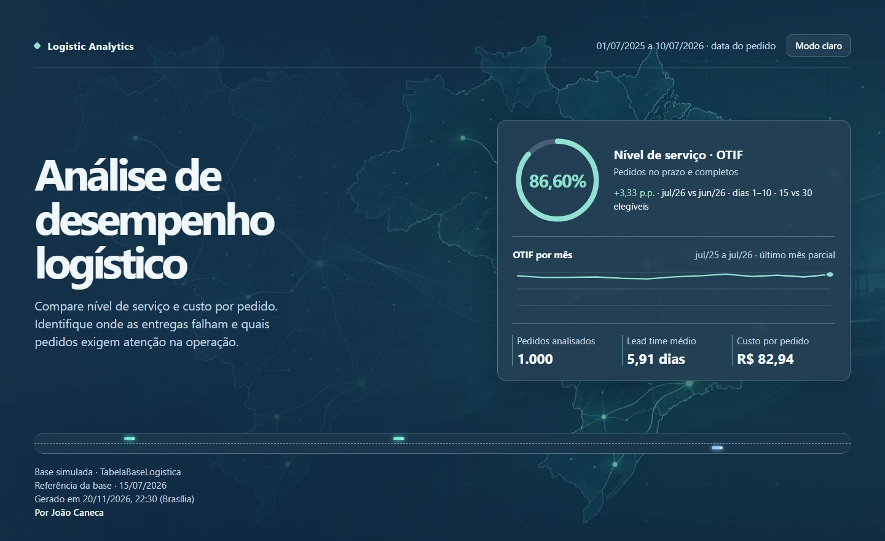

Estratégia
Como evoluíram o serviço e o custo? A tendência mensal e os indicadores permitem comparar períodos. O painel mostra tanto o volume de falhas quanto a taxa de OTIF com seu denominador.
Onde investigar falhas de entrega? Qual pedido revisar primeiro? O dashboard separa a análise de nível de serviço e custo da rotina de priorização da carteira em aberto.

A planilha reunia pedidos, datas, custos, status e ocorrências. A gestão precisava acompanhar desempenho e definir onde investigar falhas. A equipe de operação precisava localizar pedidos em aberto e priorizar o atendimento.
Como evoluíram o serviço e o custo? A tendência mensal e os indicadores permitem comparar períodos. O painel mostra tanto o volume de falhas quanto a taxa de OTIF com seu denominador.
Onde estão os atrasos e qual pedido vem primeiro? A concentração de atrasos pode ser explorada por região ou transportadora. A fila ordena os atrasados primeiro e usa a previsão de entrega mais antiga dentro do mesmo status.
O Sudeste concentrou 61 das 128 falhas de OTIF, o maior volume para começar a investigação. O Norte teve o menor OTIF, 74,0% em 50 pedidos elegíveis. As duas leituras permitem avaliar impacto e proporção antes de priorizar uma ação.
Na posição de 15/07/2026, a operação tinha 24 pedidos em aberto, sendo 21 atrasados e 3 em trânsito. A fila abre espaço para investigar cada ocorrência a partir do status e da data prevista.
O desafio técnico era preservar a granularidade de pedido, manter registros sem data de entrega e garantir que taxas e médias continuassem coerentes sob filtros. A solução combina staging rastreável no Power Query, modelo estrela, medidas DAX e dois contratos JSON para os visuais HTML.
A Capa e a Estratégia compartilham indicadores e dados agrupados para recalcular os resultados no recorte. A Operação consome um contrato por pedido para localizar cada caso na fila. A data ativa do calendário é a data do pedido.
dax-creation-expert guiou o modelo e as medidas. A dataviz-html-dax guiou os visuais, a navegação e os filtros internos. Os prompts explicitaram escopo, granularidade e critérios de aceite.O relatório publicado usa o modelo semântico e as medidas DAX para os indicadores. A participação da IA ocorreu durante o desenvolvimento.
Comece pela Estratégia. Filtre uma região para comparar serviço e custo ou navegue para Operação e confira o primeiro pedido da fila.